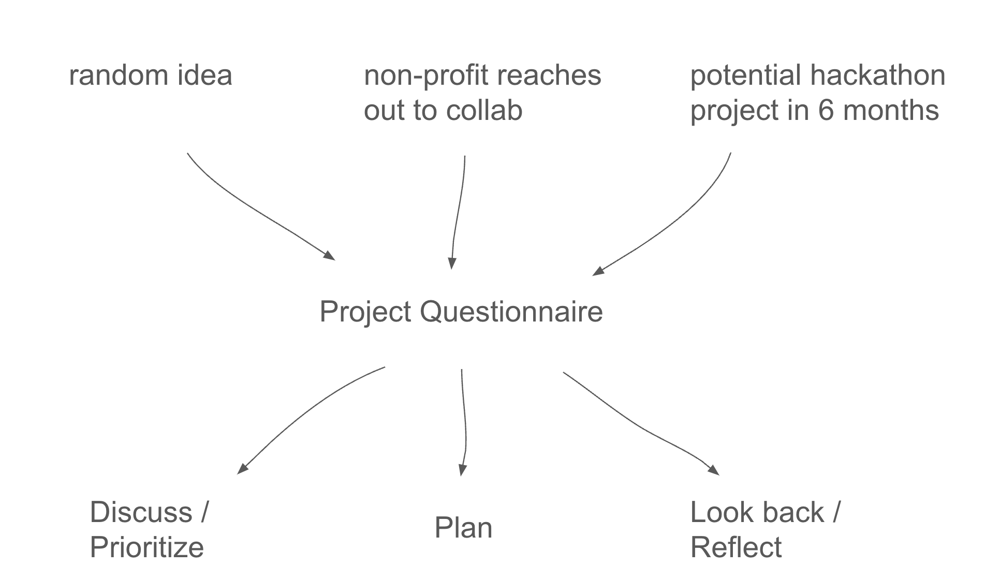

Over the past 5 years—while helping create projects at Code for Philly and sitting on organizing committees for events—I’ve often reached for the Code for Philly Project Questionnaire.
In this post, I want to discuss what makes the questionnaire so useful, and the different situations I’ve ended up using it in.
Here are some quick numbers on project questionnaires filled out over the years:
The questionnaire starts with these prompts:
- Idea Name
- Describe the idea. What is the overall mission and objective of the project?
- What’s your organization’s mission? Why do you care about this idea?
- Can you rank the top three goals of the project?
- …
- …
- …
- Who are the top target beneficiaries (users, stakeholders, etc) of the project? What do you hope they gain from the value your project delivers?
These questions may seem obvious to people experienced in managing projects. But I find that without the questionnaire big pieces get left out. Without it, people often omit information about stakeholders, exactly who benefits from success, and how they benefit.
The questionnaire was created for Code for Philly by then co-director Rich McMillen. Code for Philly uses it to jumpstart collaborations between technical folks and non-profits. Projects are the lifeblood of Code for Philly, and the questionnaire helped us streamline project ideation and creation.
A project questionnaire is useful because it creates an hourglass shaped workflow. That is, it takes a lot of different kinds of inputs (from random ideas to meetings with non-profit partners), and maps them onto a common format (the questionnaire), which then gets used across a range of activities.

Note that there are two important features of the hourglass workflow:
Importantly, it’s just a google doc, which most people are familiar with. This makes it easy to send, copy, and share.
If you’re not currently using a project questionnaire in your organizing, give Code for Philly’s Project Questionnaire a try. I haven’t thought much about refining this questionnaire, because I find the hardest part of organizing is not the questionnaire itself—but all the other activities that go on around it!
Follow on Twitter | Hucore theme & Hugo ♥